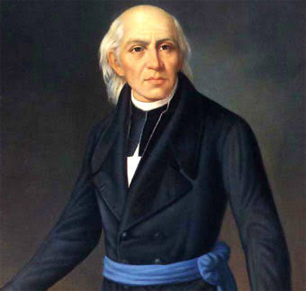
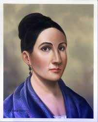
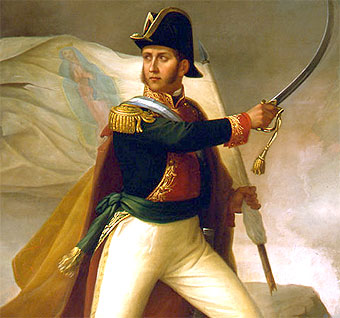
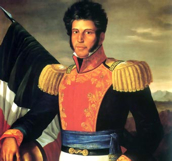
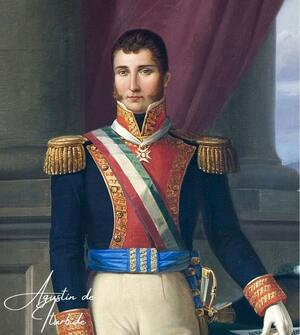
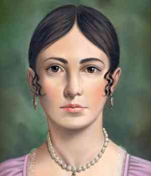

Personajes Ilustres
• Miguel Hidalgo y Costilla ("El Padre de la Patria"):Inició el movimiento con el Grito de Dolores el 16 de septiembre de 1810. Fue la voz que unió a campesinos, indígenas y artesanos en el primer gran ejército insurgente.

• José María Morelos y Pavón ("El Siervo de la Nación"):Lideró la segunda etapa militar y política del movimiento. Organizó el Congreso de Chilpancingo y redactó los Sentimientos de la Nación, sentando las bases ideológicas de la nación independiente.

• Josefa Ortiz de Domínguez ("La Corregidora"):Pieza clave de la Conspiración de Querétaro. Al ser descubiertos los planes revolucionarios, logró alertar a tiempo a Hidalgo y Allende, evitando que el movimiento fuera aplastado antes de comenzar.

• Ignacio Allende:Estratega militar del primer contingente insurgente. Su liderazgo militar fue fundamental en las primeras victorias del movimiento, como la toma de la Alhóndiga de Granaditas.

• Vicente Guerrero:Mantuvo viva la llama de la rebelión mediante la guerra de guerrillas en el sur del país tras la muerte de Morelos. Su alianza con Iturbide permitió consumar la independencia.

• Agustín de Iturbide:Comandante del ejército realista que pactó la paz con Guerrero a través del Plan de Iguala, encabezó la entrada del Ejército Trigarante a la Ciudad de México el 27 de septiembre de 1821.

• Leona Vicario:Periodista y financista de la causa insurgente. Transmitió información confidencial desde la capital y donó gran parte de su fortuna para abastecer de armas y suministros a las tropas rebeldes.
